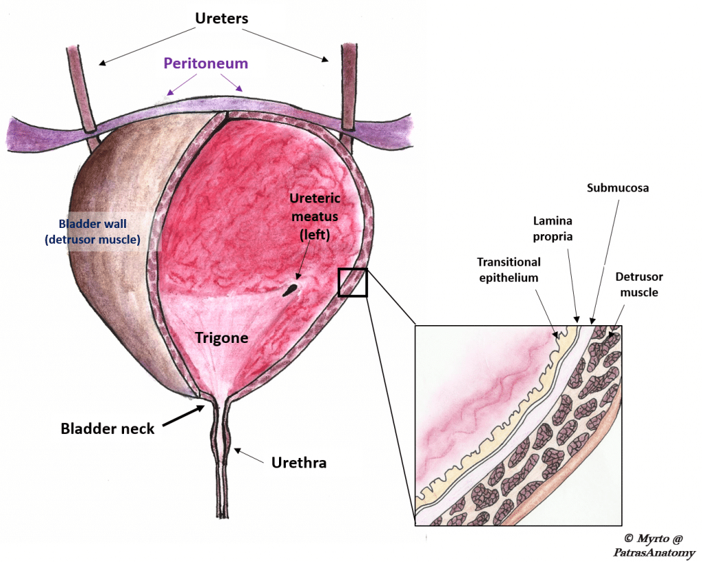
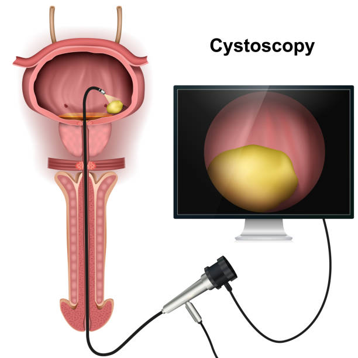
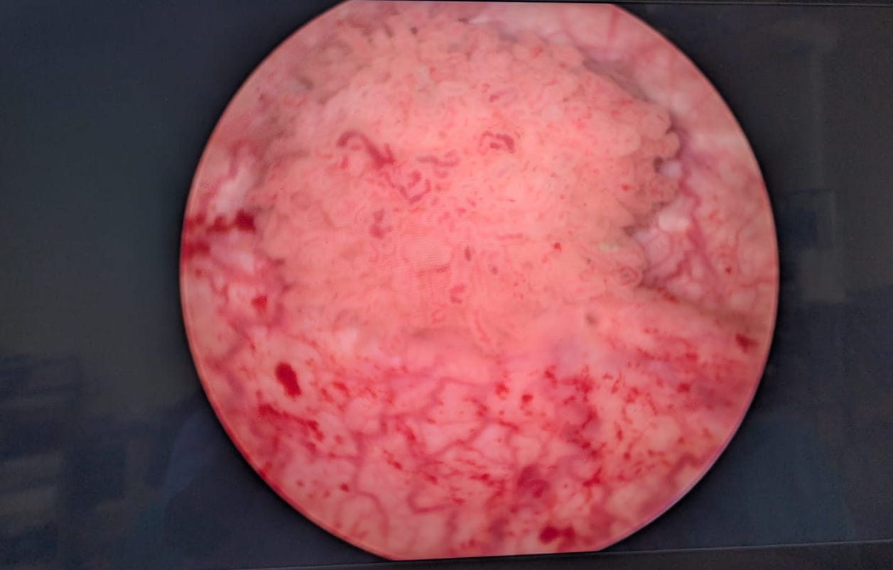
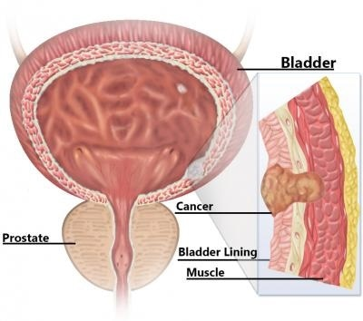

Bladder Cancer
Bladder Cancer
Understanding Non-Muscle Invasive Bladder Cancer (NMIBC)
Non-Muscle Invasive Bladder Cancer (NMIBC) is the most common form of bladder cancer, representing about 75-80% of all newly diagnosed cases. The defining characteristic of NMIBC is that the cancer cells have grown into the inner lining of the bladder, or slightly into the layer beneath it, but have not yet invaded the detrusor muscle layer of the bladder wall. This distinction is crucial because it significantly influences treatment strategies and prognosis.
The Bladder Wall:
To understand NMIBC, let's quickly review the layers of the bladder wall:
Urothelium (Transitional Epithelium): The innermost lining that comes into contact with urine.
Lamina Propria: A thin layer of connective tissue found directly beneath the urothelium.
Muscularis Propria (Detrusor Muscle): The thick muscle layer responsible for bladder contraction.
Perivesical Fat: The outermost fatty tissue surrounding the bladder.
In NMIBC, the cancer is confined to the urothelium and/or the lamina propria. It has not reached the muscularis propria.
![[Image placeholder]](../../images/placeholder.jpg)
[Image #1 – please replace manually]
Types of Non-Muscle Invasive Bladder Cancer
NMIBC is further classified based on how the cancer cells appear under a microscope and how they grow:
Papillary Carcinoma: These tumors grow in slender, finger-like projections from the bladder lining into the bladder cavity. They are often described as having a "sea anemone" appearance.
Low-Grade Papillary Carcinoma: The cells look more like normal bladder cells. These tumors tend to grow slowly and are less likely to spread, but they can recur.
High-Grade Papillary Carcinoma: The cells look more abnormal and disorganized. These are more aggressive, have a higher risk of recurrence, and are more likely to progress to muscle-invasive disease if not effectively treated.
Carcinoma In Situ (CIS): This is a flat, velvety patch of high-grade cancer cells that are confined entirely to the innermost lining (urothelium). CIS does not form a visible tumor that protrudes into the bladder cavity. Despite being "non-invasive," CIS is considered a high-risk form of NMIBC because it has a significant potential to progress to muscle-invasive bladder cancer if left untreated.
Symptoms of NMIBC
The most common symptom of NMIBC, as with other forms of bladder cancer, is hematuria (blood in the urine). This can be visible (gross hematuria) or only detectable under a microscope (microscopic hematuria). Other symptoms may include:
Frequent urination
Pain or burning during urination
Urgency to urinate
Pain in the lower back or pelvic area (less common in early stages)
If you experience any of these symptoms, it's crucial to consult a doctor for prompt evaluation.
Diagnosis of NMIBC
Diagnosis typically involves:
Cystoscopy: A procedure where a thin, lighted tube with a camera is inserted into the bladder through the urethra to visualize the bladder lining.
Transurethral Resection of Bladder Tumor (TURBT): If a tumor is found during cystoscopy, it is surgically removed through the urethra. This procedure not only treats the tumor but also obtains tissue samples for pathological examination to determine the cancer's type, grade, and depth of invasion.
Urine Cytology: Examination of urine samples under a microscope to look for cancer cells.
Imaging Tests: CT scans or MRIs may be used to assess the upper urinary tract and look for any spread, although this is less common for initial NMIBC diagnosis unless suspicion of higher stage disease.
Treatment for NMIBC
Treatment for NMIBC aims to completely remove the tumor, prevent recurrence, and stop progression to muscle-invasive disease.
Transurethral Resection of Bladder Tumor (TURBT): This is the initial and often primary treatment. The surgeon removes all visible tumors. The TURBT also provides crucial information about the tumor's characteristics (grade, stage).
Intravesical Therapy: After TURBT, medications are often instilled directly into the bladder to kill any remaining cancer cells and reduce the risk of recurrence and progression.
BCG (Bacillus Calmette-Guérin): This is a type of immunotherapy widely used for high-risk NMIBC and CIS. BCG stimulates the body's immune system to attack the cancer cells in the bladder lining.
Chemotherapy (e.g., Mitomycin, Gemcitabine): Chemotherapy drugs are also administered directly into the bladder. They work by killing cancer cells or slowing their growth. These are often used for lower-risk NMIBC or if BCG is not tolerated or effective.
Surveillance: Due to the high recurrence rate of NMIBC, regular follow-up is essential. This typically involves:
Cystoscopies: Performed at regular intervals (e.g., every 3-6 months initially, then less frequently) to look for new tumors or recurrences.
Urine Cytology: May be performed periodically.
Imaging: Occasional imaging of the upper urinary tract may be recommended.
Prognosis and Monitoring
The prognosis for NMIBC is generally good, especially with timely and appropriate treatment. However, lifelong surveillance is crucial due to the high risk of recurrence and potential for progression to muscle-invasive disease. Adhering to your doctor's follow-up schedule is vital for early detection and successful management of any new or recurring tumors.



Understanding Muscle Invasive Bladder Cancer (MIBC)
Muscle Invasive Bladder Cancer (MIBC) is a more aggressive form of bladder cancer where the cancer cells have grown beyond the inner lining and connective tissue and invaded the muscularis propria (muscle layer) of the bladder wall. This type of cancer is more serious than non-muscle invasive bladder cancer because it has a significantly higher risk of spreading to nearby lymph nodes and distant organs (metastasis).
In MIBC, the cancer has penetrated into or through the muscularis propria, giving it access to blood vessels and lymphatic channels, which can carry cancer cells to other parts of the body.
Treatment for MIBC
Due to its aggressive nature and higher risk of metastasis, MIBC generally requires more aggressive treatment compared to NMIBC. The choice of treatment depends on the stage of cancer, the patient's overall health, and personal preferences.
Radical Cystectomy (Surgery):
This is the most common and often curative treatment for MIBC.
It involves the surgical removal of the entire bladder, surrounding lymph nodes, and parts of nearby organs.
In men, the prostate and seminal vesicles are typically removed.
In women, the uterus, ovaries, fallopian tubes, and part of the vagina may be removed.
Urinary Diversion: After a radical cystectomy, a new way for urine to exit the body must be created. Common methods include:
Ileal Conduit: A piece of the small intestine is used to create a channel (stoma) on the abdomen, to which an external bag (ostomy bag) is attached to collect urine.
Neobladder: A section of the small intestine is used to create an internal pouch that functions like a new bladder, allowing for urination through the urethra.
Continent Cutaneous Diversion: An internal pouch is created, but urine is drained at intervals through a stoma using a catheter.
Chemotherapy (Neoadjuvant and Adjuvant):
Neoadjuvant Chemotherapy: Chemotherapy given before surgery (radical cystectomy). This is often recommended for MIBC because it can shrink the tumor, kill microscopic cancer cells that may have spread, and improve survival rates.
Adjuvant Chemotherapy: Chemotherapy given after surgery. This may be recommended if cancer cells were found in the lymph nodes or if there's a high risk of recurrence.
Radiation Therapy:
High-energy rays are used to kill cancer cells.
It can be used as the primary treatment for patients who are not candidates for surgery, often combined with chemotherapy (chemoradiation).
It can also be used to manage symptoms (palliative radiation) if cancer has spread to other areas, such as bones.
Clinical Trials: Patients may consider participating in clinical trials for new therapies, especially for advanced or recurrent MIBC.
Living with MIBC
A diagnosis of MIBC can be life-changing. It often requires significant surgery and subsequent adjustments. Support from healthcare teams, family, and support groups is essential. Regular follow-up appointments, including imaging and blood tests, are crucial to monitor for recurrence or spread of the cancer.

Bladder cancer is one of the most aggressive urological cancers. Survival rates decrease as the tumor stage advances. Bladder cancer treatment requires best robotic surgeon in Delhi as well as a good endoscopic surgeon. Dr Gopal Sharma has vast experience of performing transurethral resection of bladder tumors (TURBTs) in Noida and is well versed with complex surgical procedures such radical cystectomy required for bladder cancer.